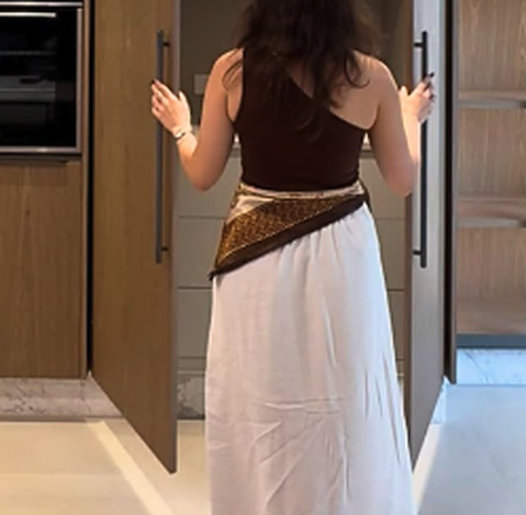
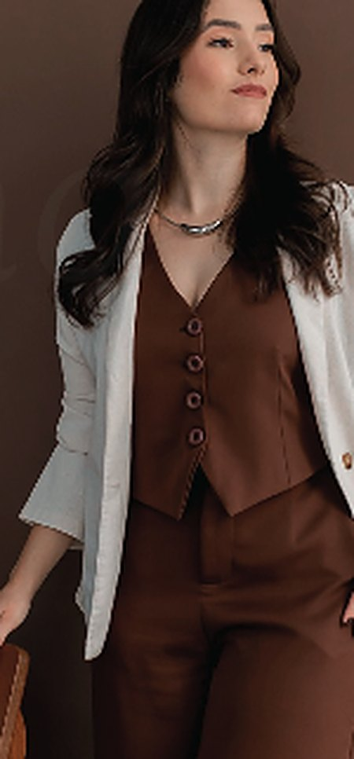
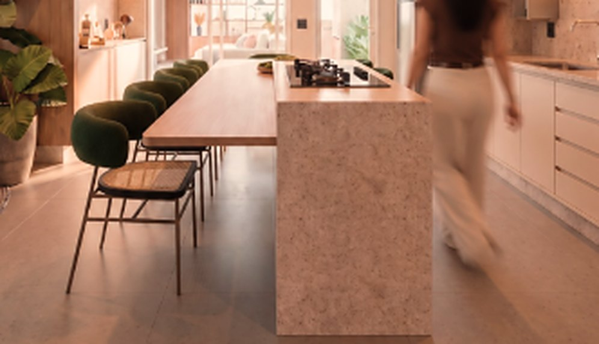
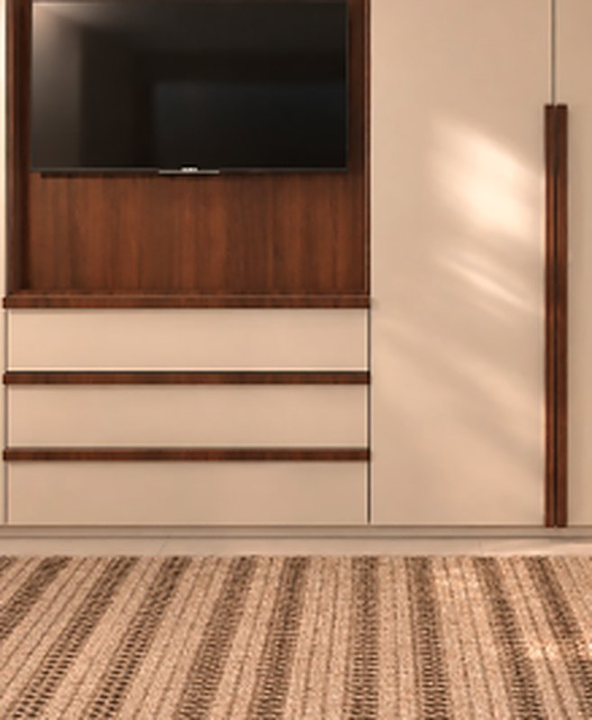
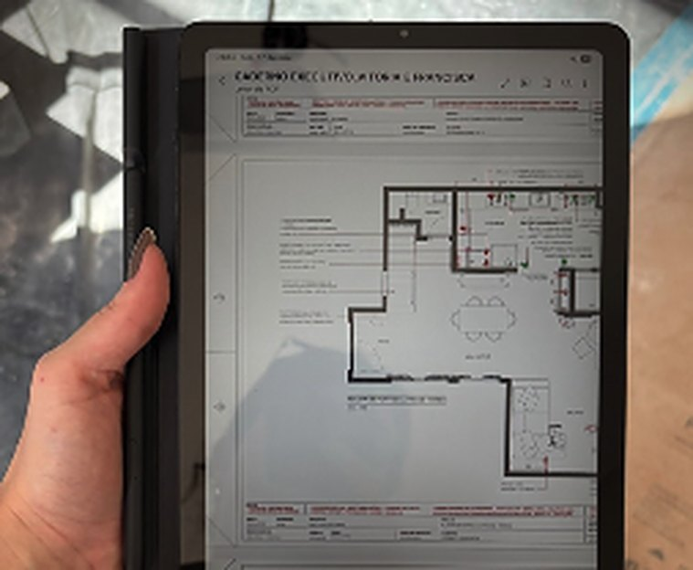

•soluções
um cantinho do café que DESAPARECE!
Solução em marcenaria: porta escamoteável. Aberta, vira estação de café completa; fechada, a cozinha fica limpa e contínua.
Transformando rotina em bem-estar com arquitetura sensível e funcional — do primeiro traço à última peça de decoração.


antes & depois Casa Veraneiochegou por aqui agora?
Sou arquiteta e atuo com arquitetura e interiores a partir de Campo Grande/MS, com projetos assinados em mais de 20 cidades.
Acredito que uma casa bonita precisa, antes de tudo, funcionar para a rotina de quem vive nela. Por isso cada projeto nasce da escuta: dos seus hábitos, das suas manias e daquilo que te faz bem. Daí surgem soluções em marcenaria que organizam (e às vezes até desaparecem), uma iluminação pensada para cada momento do dia e uma curadoria de peças com a sua personalidade.
Escuta atenta e projetos que traduzem quem você é.
Cada centímetro pensado para facilitar a sua rotina.
Luz, materiais naturais e conforto em todos os ambientes.
•serviços
Layout, marcenaria, iluminação, revestimentos e mobiliário pensados juntos, com imagens 3D realistas para você enxergar o resultado antes da obra.
Residências e reformas com foco em conforto, luz natural e fluidez entre os ambientes, do estudo inicial ao projeto executivo.
Portas escamoteáveis, nichos, painéis e armários sob medida que escondem, organizam e otimizam cada canto da casa.
Transformação sem obras: seleção de móveis, arte, tapetes, objetos e iluminação para renovar a atmosfera do seu espaço.
Presença nas etapas da execução para que o projeto saia do papel exatamente como foi pensado.

•soluções
Solução em marcenaria: porta escamoteável. Aberta, vira estação de café completa; fechada, a cozinha fica limpa e contínua.

•soluções
Nicho integrado para a TV, gaveteiro e puxadores em madeira: armazenamento e estética no mesmo móvel.
•portfólio
•antes/depois
Estar e cozinha ganharam marcenaria em madeira com iluminação embutida, paleta quente e peças em tons de vinho. O resultado é um ambiente acolhedor que convida a ficar.
Uma transformação feita só com curadoria: tapete xadrez, arte, luminária de papel, plantas e mobiliário de madeira mudaram por completo a atmosfera do apartamento, sem quebrar nenhuma parede.
arraste a linha para comparar ↔


•reflexão
Medidas reais, hábitos reais, necessidades reais. Nada de solução genérica: cada decisão parte de quem vai viver no espaço.
Detalhamento técnico, especificação correta de materiais e compatibilização evitam retrabalho e desperdício.
A porta que esconde o café, o painel que integra a TV, a iluminação que muda o clima: isso nasce do projeto.
Do primeiro briefing à escolha da última almofada, você não toma as decisões sozinho(a).
•como funciona
Entendo sua rotina, seus gostos, o orçamento e os prazos.
Medição e análise do espaço existente e do que precisa mudar.
Layout, referências e imagens realistas para você visualizar tudo.
Detalhamento de marcenaria, iluminação, revestimentos e pontos.
Acompanhamento da execução e escolha final das peças.
•feedbacks
[Depoimento do cliente: cole aqui o texto real de um feedback.]
[Depoimento do cliente: cole aqui o texto real de um feedback.]
[Depoimento do cliente: cole aqui o texto real de um feedback.]
•vamos conversar
Conte um pouco sobre o seu espaço e o que você sonha para ele. Atendo Campo Grande/MS e tenho projetos em mais de 20 cidades.
Campo Grande · MS